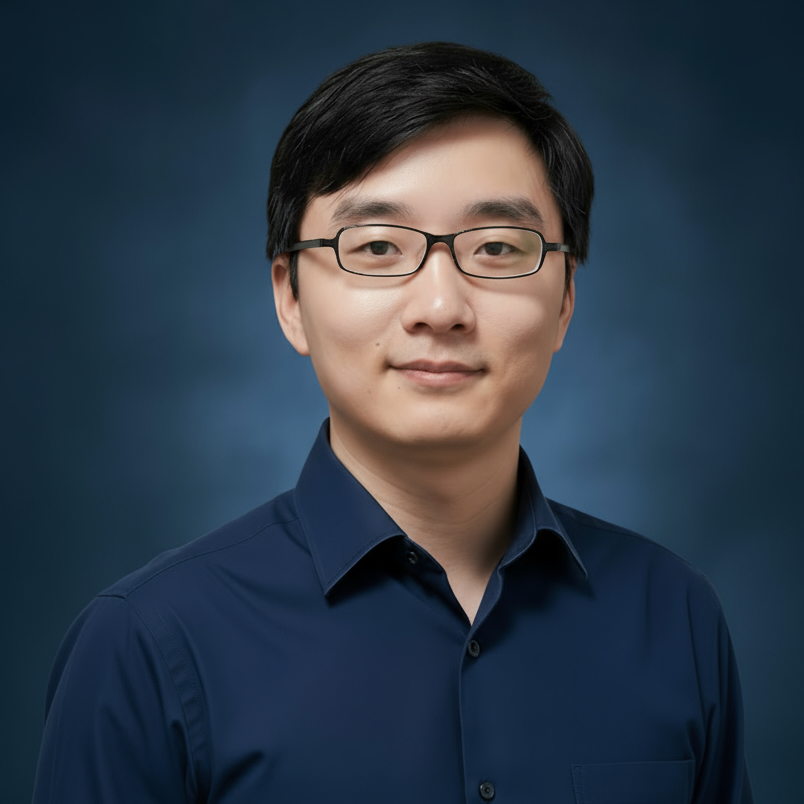

Skip to content

Weiran Zheng
Associate Professor · Department of Chemistry
Guangdong Technion–Israel Institute of Technology
Employment
- 2022 — present
- Associate Professor, Department of Chemistry, Guangdong Technion–Israel Institute of Technology
- 2017 — 2022
- Research Fellow, Hong Kong Polytechnic University
- 2015 — 2017
- Postdoc Fellow, Hong Kong Polytechnic University
Education
- 2009 — 2015
- Ph.D. (Physical Chemistry), Wuhan University / University of Oxford (CSC joint PhD program)
- 2005 — 2009
- B.S. (Chemistry), Wuhan University
Academic Service
- 2025 — present
- Associate Editor, Journal of Molecular Liquids
- 2024 — present
- Early Career Editorial Board Member, Journal of Electrochemistry (official journal of the Chinese Electrochemistry Society)
Current Members
Previous Members